Grafana Guide: Bar Chart, Pie, Histogram and Heatmap
|
This content was generated with the assistance of AI and should be verified against the official documentation before being relied on in production. |
Checked on 2026-11-11 against Grafana 13.3.x.
What you build
You add four panels to the dashboard Bookshelf (guides). Two of them draw the request rate of the Bookshelf service by HTTP status as categories, a bar chart and a donut. The other two show how the response time is distributed: a histogram of the 95th percentile latency over the selected time range, and a heatmap of the Prometheus latency buckets over time.
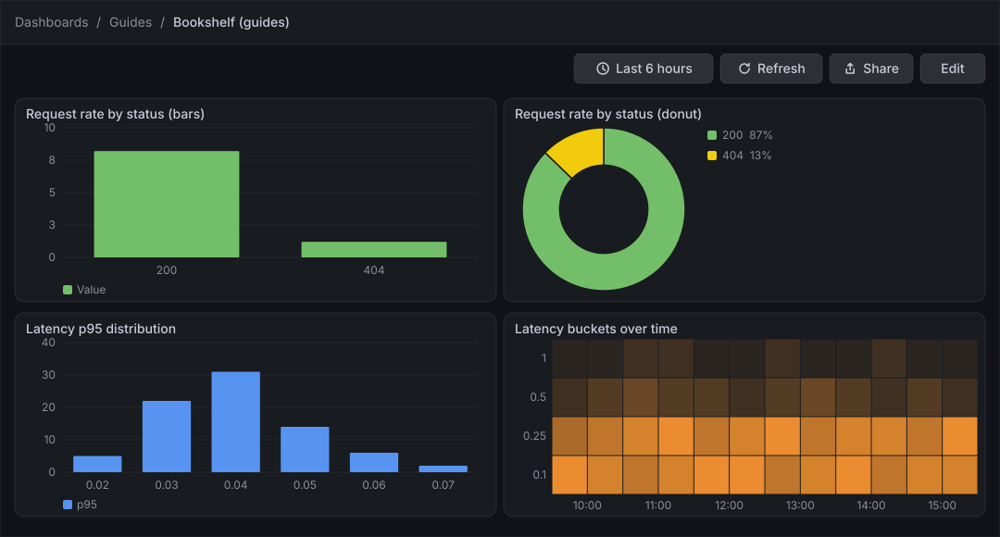
Before you start
-
Start the Grafana profile of the hands-on lab and wait about a minute:
cd lab docker compose --profile grafana up -d -
Open http://localhost:3000, sign in as
adminwith the passwordadmin, and click Skip when Grafana 13.3 asks you to update the default password. -
Do the guide Create a dashboard and the first panel first: it creates the folder Guides and the dashboard Bookshelf (guides) that this guide extends. The previous guide, Tables, shows the same way of building a panel from an instant query.
-
The data source Prometheus is provisioned by the lab and is the default data source. The load generator sends traffic to the Bookshelf service in its default mode, which gives the queries something to draw. The latency panels need a few minutes of traffic to look good.
-
The guide was checked on Grafana Enterprise 13.3.0 (the free image, no licence key). Editing dashboards needs the Editor or Admin role of the organization;
adminhas it. -
The figures are drawings of the Grafana 13.3 user interface, not screenshots, so small details can differ from your screen. A highlighted box with a number marks the control of the step with the same number.
Steps
The panel editor used here is the one shown in the map of the first dashboard guide; come back to that map when a control is not where a figure shows it. Each panel is built in the panel editor and left with Back; the dashboard is saved once at the end.
Open the dashboard and add a panel
-
In the left navigation, click Dashboards, open the folder Guides and click Bookshelf (guides).
-
Click Edit at the top right.
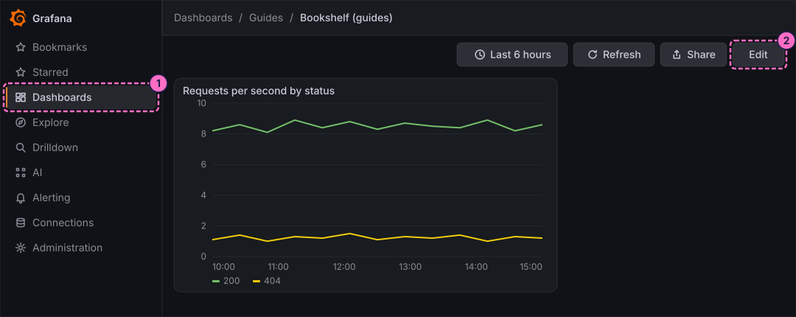
-
In the toolbar, click Add.
-
In the Add pane of the right sidebar, click the Panel tile.
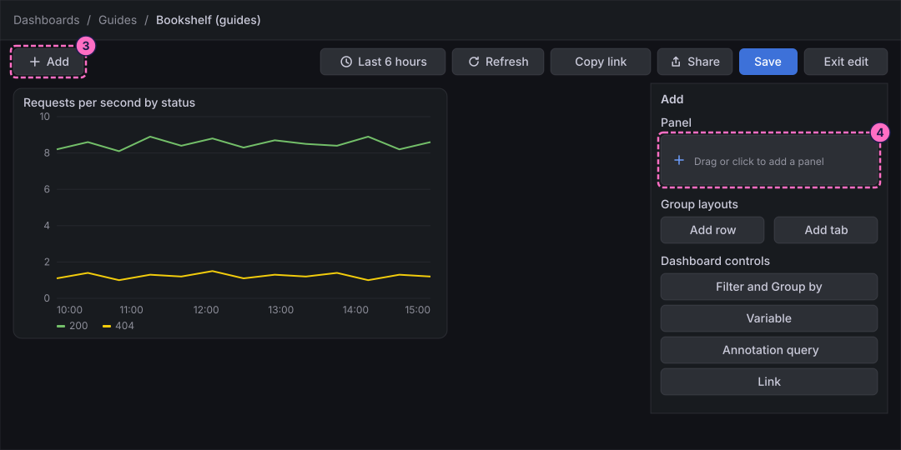
-
In the Panel pane that replaces the Add pane, click Edit visualization.
Draw the request rate by status as a bar chart
-
At the bottom of the panel editor, check that the Queries tab is selected and that Data source shows Prometheus.
-
In query A, click Code in the Builder / Code switch.
-
Click inside the query editor first, so that it has the focus, then type the query, which sums the request rate by HTTP status:
sum by (status) (rate(http_server_requests_seconds_count{application="bookshelf"}[1m])) -
Below the editor, click the Options line to open it, then open the Format list and choose Table. A bar chart needs one row per status, not one line per series.
-
In the same row, open the Type list and choose Instant, so that the query returns the latest rate of each status.
-
Click Run queries.
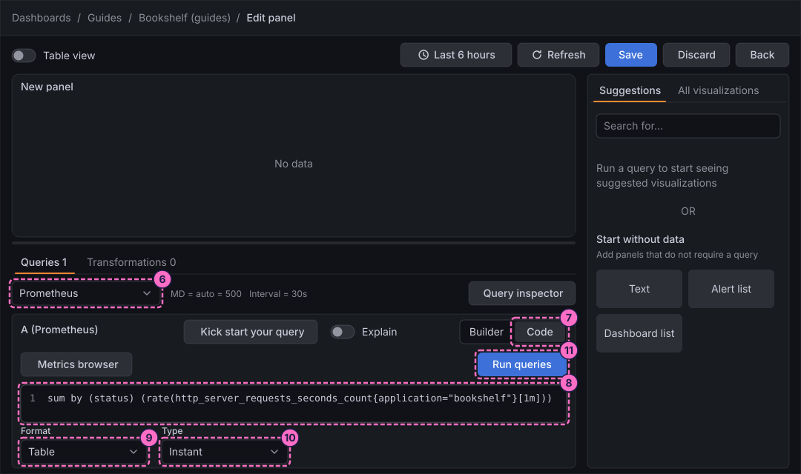
-
In the right column, click the All visualizations tab, then click Bar chart ("Categorical charts with group support").
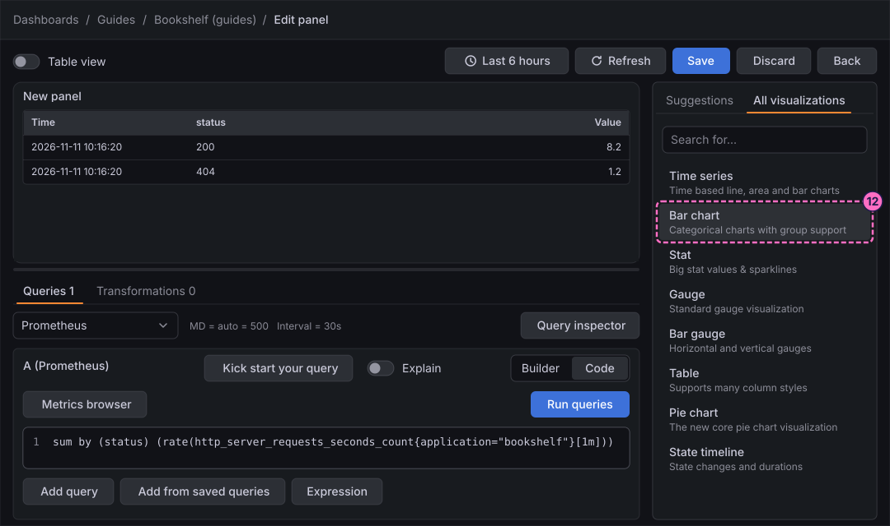
-
The right column becomes the options pane, headed Bar chart. Open Panel options and type
Request rate by status (bars)in Title. -
Open Bar chart and, in X Axis, choose the field
status, so that each bar is one status code.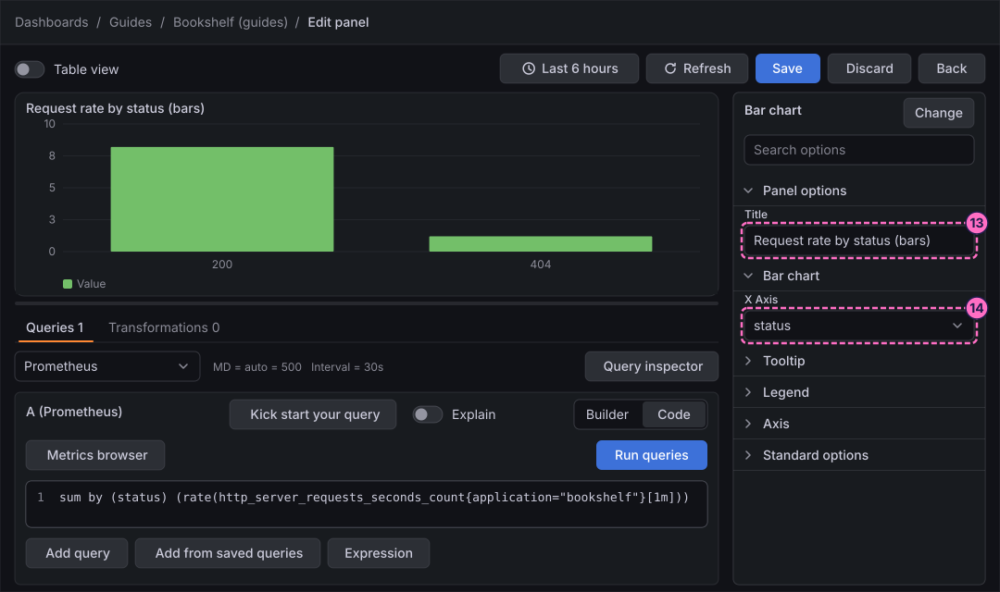
-
Click Back in the header of the editor. The 13.3 panel editor has no Apply button; the panel stays on the dashboard, which is saved at the end.
Draw the same data as a donut
-
In the toolbar, click Add.
-
In the Add pane, click the Panel tile.
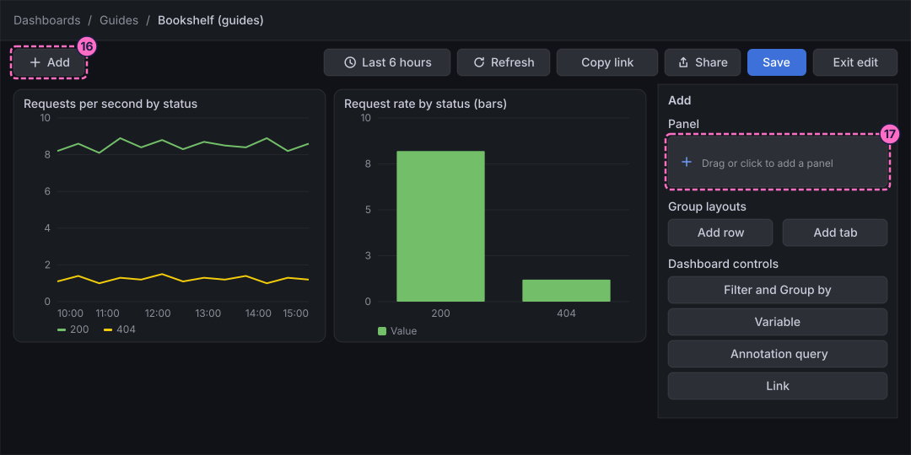
-
In the Panel pane, click Edit visualization.
-
Repeat steps 7 to 11: choose Code, type the same query, set Format to Table and Type to Instant, and click Run queries.
-
In the right column, click All visualizations, then Pie chart ("The new core pie chart visualization").
-
Under Panel options, type
Request rate by status (donut)in Title. -
Open Value options and set Show to All values, so that every row of the table is a slice. With the default the panel reduces the numbers to a single value.
-
Open Pie chart and set Pie chart type to Donut.
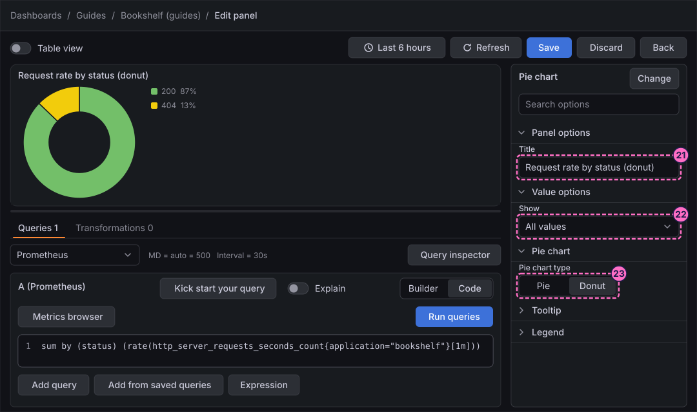
-
Click Back.
Show the latency distribution as a histogram
-
Repeat steps 16 to 18: click Add, click the Panel tile and click Edit visualization.
-
In query A, click Code.
-
Click inside the query editor, then type the query, which computes the 95th percentile latency from the Prometheus buckets (the editor wraps the long line, as the figure shows):
histogram_quantile(0.95, sum by (le) (rate(http_server_requests_seconds_bucket{application="bookshelf"}[1m]))) -
Leave Format and Type at their defaults and click Run queries. The preview draws one line, the latency over time.
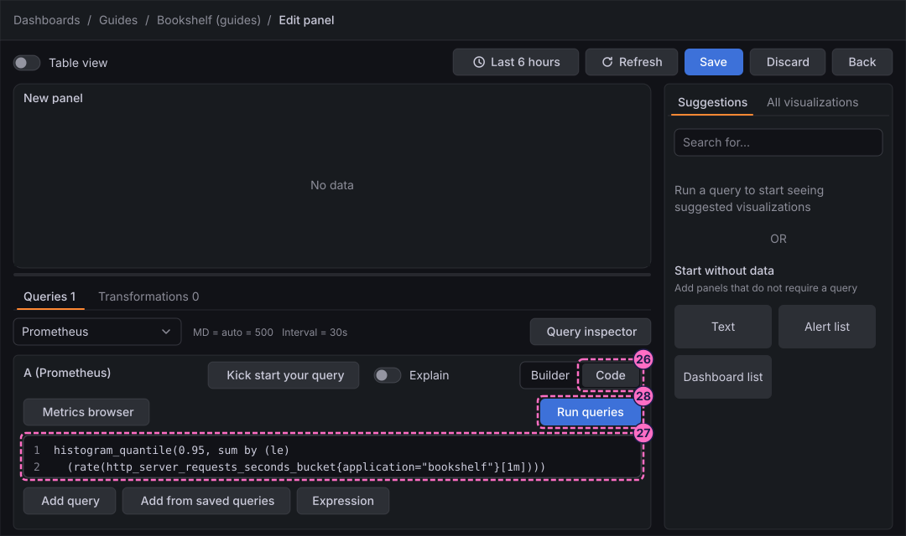
-
In the right column, click All visualizations, then Histogram ("Distribution of values presented as a bar chart.").
-
Under Panel options, type
Latency p95 distributionin Title. -
Open Histogram and type
20in Bucket count. The bars now count how many samples of the line fall into each of 20 value ranges.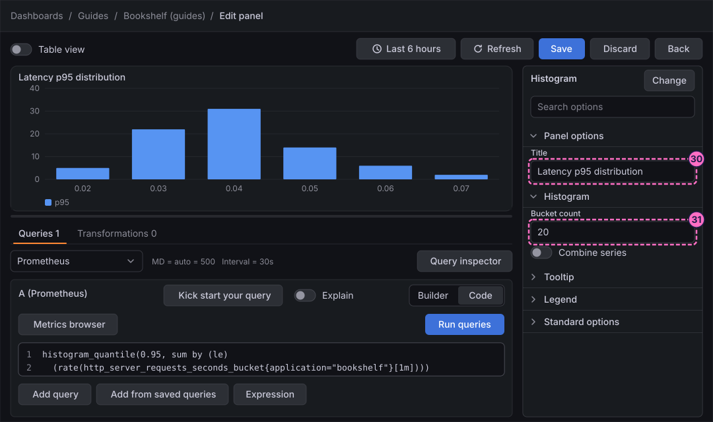
-
Click Back.
Show the latency buckets as a heatmap
-
Repeat steps 16 to 18 once more to add the fourth panel and open its editor.
-
In query A, click Code.
-
Click inside the query editor, then type the query, which keeps the rate of every latency bucket as its own series:
sum by (le) (rate(http_server_requests_seconds_bucket{application="bookshelf"}[1m])) -
Below the editor, click the Options line to open it, then open the Format list and choose Heatmap. Leave Type at its default.
-
Click Run queries.
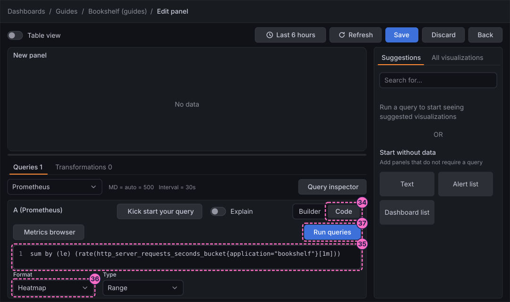
-
In the right column, click All visualizations, then Heatmap ("Like a histogram over time").
-
Under Panel options, type
Latency buckets over timein Title. -
Open Heatmap and set Calculate from data to No. The data already comes as buckets, so Grafana must not bucket it again.
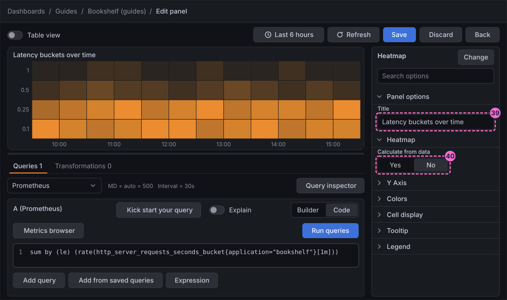
-
Click Save in the header of the editor.
-
In the Save dashboard drawer, click Save.
-
Click Back to return to the dashboard.
-
Click Exit edit. If Grafana 13.3.0 shows the dialog Unsaved changes, click Save and click Save again in the drawer, as in the first dashboard guide.
Check the result
Open Dashboards → Guides → Bookshelf (guides). The dashboard must show the four new panels: a bar chart and a donut with a large part for the status 200 and a small one for 404, a histogram of latency values and a heatmap whose cells are brightest in the lowest buckets.
To see the panels react, send errors, wait a minute and press Refresh; a third bar and a third slice for the status 500 appear:
curl -X POST localhost:8090/mode/failingTo move the latency panels, make the service slow instead:
curl -X POST localhost:8090/mode/slowRestore normal traffic afterwards, and check the mode of the load generator at any time:
curl -X POST localhost:8090/mode/normal
curl localhost:8090/Variations
-
Draw several statuses as groups of bars: add a second series to the bar chart with another query and use Stacking under Bar chart to stack them.
-
Show the share instead of the rate: set Labels under Pie chart to show the percentage on each slice.
-
Let Grafana bucket the data itself: set Calculate from data to Yes and fill X Bucket and Y Bucket under Heatmap. This also lets you try the panel with the data source TestData when the Bookshelf buckets are too thin, for example just after the lab started.
-
Change the colours of the heatmap under Colors: Mode, Scheme and Steps.
What can go wrong
| Symptom | Cause | Fix |
|---|---|---|
The bar chart or the donut shows a single bar or slice |
Format is still Time series, or Show of the donut is still the default calculation, which reduces the numbers to one value. |
Set Format to Table and Type to Instant, and set Show to All values under Value options. |
The bar chart has no label under the bars |
X Axis does not name the status field. |
Open Bar chart and choose |
The histogram is almost empty or has one tall bar |
The lab started less than a few minutes ago, so the line has few samples, or Bucket count is too high for them. |
Wait for more traffic, press Refresh, and lower Bucket count. |
The heatmap is empty or one solid colour |
Format is not Heatmap, or Calculate from data is Yes although the data is already in buckets. |
Set Format to Heatmap in the Options line and Calculate from data to No; or use TestData with Calculate from data set to Yes. |
Exit edit keeps showing Unsaved changes |
Grafana 13.3.0 raises the dialog even after a save. |
Click Save, and Save again in the drawer; the dialog does not return once edit mode has closed. |
Clean up
Keep the panels: later guides on this dashboard build on them. To remove them, open the dashboard, click Edit, open the menu of each panel and delete it, then save the dashboard.
Where to go next
-
Previous guide: Tables.
-
Next guide: State timeline, status history, logs and text panels, which shows states over time and adds logs.
-
Reference: Grafana Graphs and Charts covers every option of these visualizations.